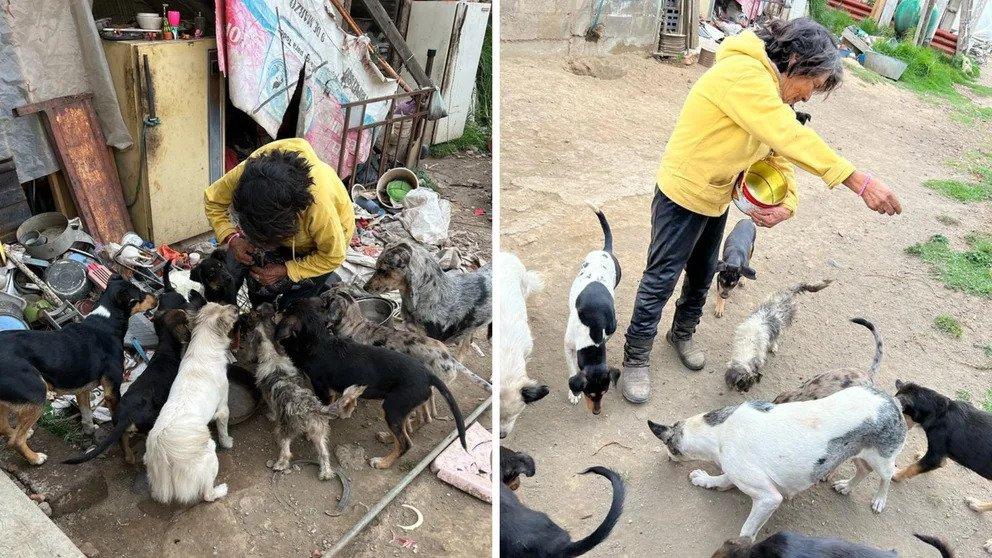

Pese a su pobreza extrema Doña Meche alimentaba a “lomitos” callejeros, vecinos en lugar de ayudar la atacaban en Amecameca
“Huellitas Amecameca” es un albergue del Estado de México que se dedica a rescatar animales en situación de calle, a través de su labor dio a conocer el caso de Doña Meche, una mujer que pese a no gozar de la mejor calidad de vida, brinda apoyo y cuidados a 20 perros callejeros.
